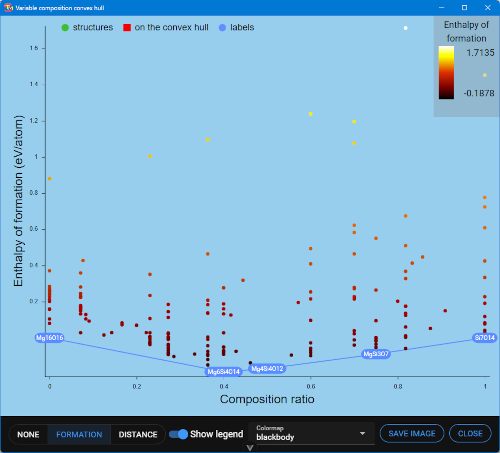
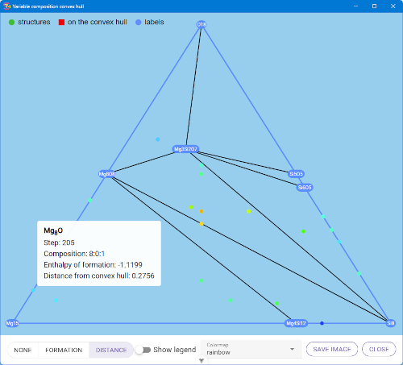

Depending on the number of components, the window shows the distribution of enthalpy of formation for the structures versus their composition.
Clicking on the legend entries show or hide the corresponding points in the chart.
| Color by | radio buttons | Selects value to be represented as color of the points.
|
| Show legend | toggle | Show the legend for the points color. Disabled if the points have color “None”. |
| Colormap | selector | Name of the colormap to convert values into colors. |
| Save image | button | Save a snapshot of the chart. |
| Close | button | Close the window. |
The legend on the top left of the chart is active. Clicking on one entry hide or show the corresponding points.

The chart shows a point for each structure after removing duplicates. The composition ratio is: component2/(component1+component2)
The line is the lower part of the convex hull enclosing the points. The red squares are structures that lies exactly on the convex hull line. In the image these points are overlaid by the corresponding formula.
Hovering a point shows a popup with the following information:
| Step | Step of the structure in the loaded sequence |
| Composition | Proportion of the two components |
| Enthalpy of formation | Enthalpy of formation (eV/atom) |
| Distance from convex hull | Enthalpy difference with the convex hull line |

The chart shows a point for each structure after removing duplicates. On the corners of the triangles are the three end-members components. The enthalpy of formation lies on the axis perpendicular to the image.
The red squares are structures that lies exactly on the convex hull surface. This surface lies below the visualized triangle and is the bottom half of the convex hull enclosing the points.
Clicking on the top-left legend “labels” entry show the formula corresponding to these points.
Hovering a point shows a popup with the following information:
| Step | Step of the structure in the loaded sequence |
| Composition | Proportion of the three components |
| Enthalpy of formation | Enthalpy of formation (eV/atom) |
| Distance from convex hull | Enthalpy difference with the convex hull surface |
The image shows an example of the popup.
The convex hull can also be viewed in 3D launching the 3D view.
The convex hull is only visible in 3D launching the 3D view.